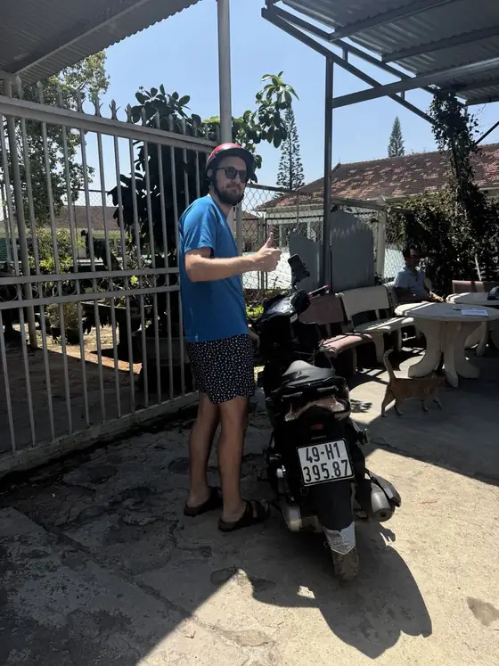

План аренды под время рассвета
Чайные холмы Кау Дат находятся примерно в 20–25 км к востоку от центра — это около 40–60 минут на скутере. Чтобы успеть к мягкому свету до восхода, большинство выезжает примерно между 4:30 и 4:45. Если вам нужна аренда байка в Далате на рассвет, именно это время определяет всё: когда забрать байк, какой выбрать и сколько бензина взять. Маршрут, сезон облаков и советы по фото — в нашем гиде по рассвету на чайных холмах Кау Дат, а эта статья — про аренду.
Какой байк выбрать для Кау Дат
- Honda Air Blade 125cc — наша рекомендация. Дорога туда и обратно — около 50 км с длинными пологими подъёмами. У Air Blade больше мощности для холмов и двоих седоков, и на холодной тёмной дороге на нём комфортнее.
- Honda Vision 110cc: подойдёт одному опытному водителю, который едет налегке.
- Электроскутер: для этой поездки не рекомендуем. Одной батареи хватает примерно на 25–30 км, к каждому скутеру идут 2 батареи (всего около 50–60 км), но длинные подъёмы быстро их расходуют и почти не оставляют запаса. Электроскутеры лучше оставить для города.
Когда забрать байк
Есть два простых варианта:
- В 4:30 утра, когда мы открываемся. Напишите нам накануне вечером, во сколько придёте и какой байк нужен. Он будет готов; оформление занимает несколько минут (паспорт или ID-карта, без денежного залога), вы делаете короткий тестовый круг, и мы вместе снимаем состояние байка на видео. Сутки аренды длятся с момента получения до 21:00, так что это будут одни сутки.
- Накануне. Выезжать прямо от отеля спокойнее, но помните: каждые сутки аренды заканчиваются в 21:00 — байк, взятый накануне вечером, считается за двое суток. Если вы и так берёте байк на 2 дня или больше, мы бесплатно доставим его в отель в центре Далата.
Подробнее о времени открытия — в статье аренда байка в Далате рано утром.

Бензин: заправьтесь накануне вечером
Бензиновые скутеры выдаются с 1 литром топлива — этого хватит до заправки, но не для спокойной поездки на 50 км по холмам на рассвете. В 4:30 некоторые АЗС ещё закрыты, поэтому заправьте полный бак накануне вечером. Если забираете байк на рассвете, скажите нам — подскажем ближайшую заправку по пути из города.
Что взять с собой
- Тёплую куртку, перчатки и длинные брюки — до рассвета намного холоднее, чем в центре, а встречный ветер добавляет холода.
- Дождевик под сиденьем и закрытую обувь для грязных тропинок между чайными рядами.
- Заряженный телефон с сохранённым офлайн-маршрутом и небольшой пауэрбанк. На каждом байке есть держатель для телефона.
- Шлемы бесплатные — попросите подходящий размер для обоих седоков.
Езда в темноте
- Во время тестового круга проверьте фару, стоп-сигнал и поворотники.
- В тумане езжайте медленно, держитесь правой стороны дороги и следите за ранними грузовиками с овощами.
- Никакого алкоголя и пива за рулём, строго соблюдайте вьетнамские правила дорожного движения.
Забронируйте байк на рассвет
Любой байк стоит 150 000 VND в сутки, шлем и держатель для телефона включены. Нужна аренда байка в Далате на рассвет? Пришлите нам дату и время получения в WhatsApp, Zalo или Telegram, либо посмотрите все байки на нашей странице аренды байков в Далате. Хотите ещё и облака? Читайте наш гид по охоте за облаками.
🚌 Приехали в Далат ночным автобусом рано утром: что делать →
Telegram-канал «Жизнь в Далате · Вьетнам»
Местная жизнь, погода и природа Далата — спокойно и по-настоящему. Подписывайтесь, чтобы видеть Далат каждый день.
Подписаться на каналАренда байка в Далате
Honda Vision, Honda Air Blade 125cc и электроскутеры — 150 000 VND в день, без денежного залога, шлем бесплатно, доставка в отель от 2 дней.